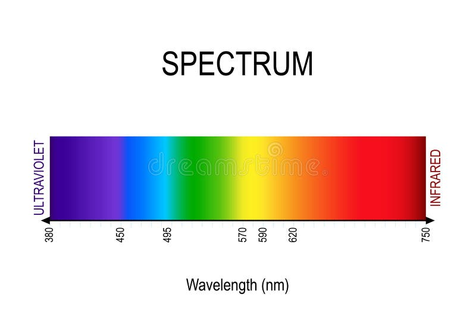
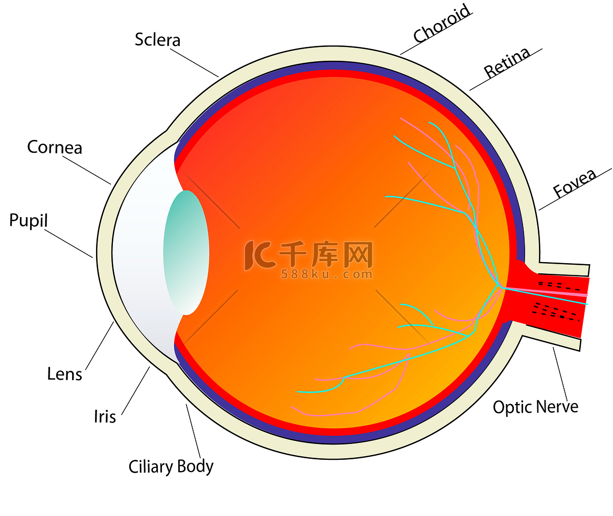
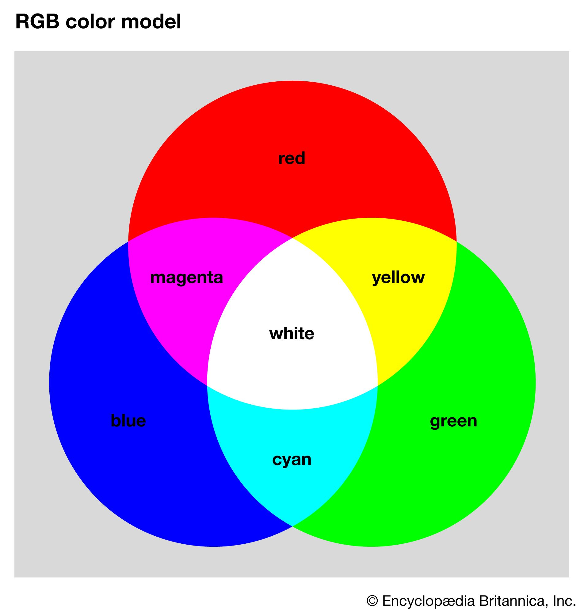
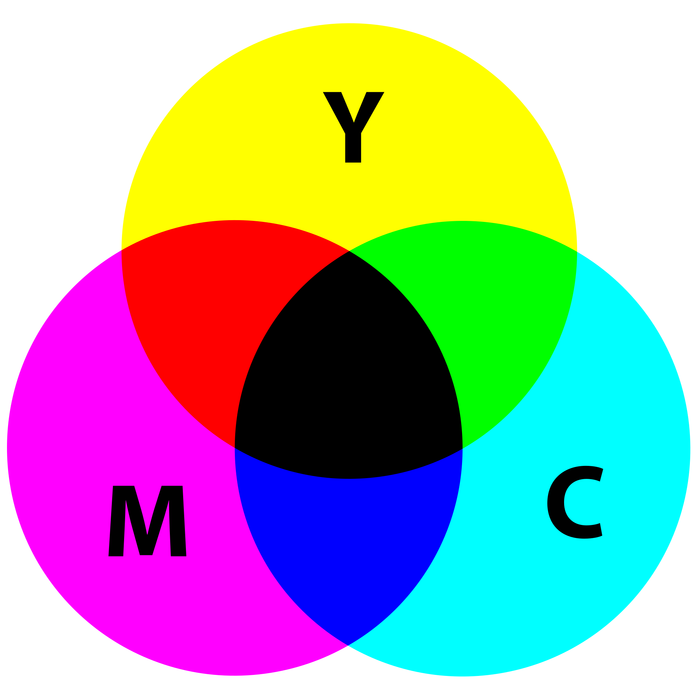
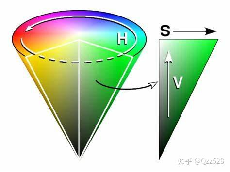

Enjoy Your Colour Encoding Learning！
Master Light Physics, Human Vision, RGB/CMYK/HSV/YUV/YCbCr — Full Professional Knowledge System
1. The Ultimate Nature of Color
Color is not an inherent physical property of objects. It is a subjective visual perception produced when visible light interacts with objects, is captured by photoreceptor cells in the eyes, and is interpreted by the brain.
Objects themselves have no color. They only possess the ability to absorb and reflect specific wavelengths of light. The reflected light enters our eyes, and our brain processes it into the colors we perceive.
Core Physical Law: Objects reflect the light we see; they absorb the light we do not see.
2. Visible Light Spectrum & Wavelengths
Visible light is a tiny part of the entire electromagnetic spectrum. The wavelength range visible to humans is approximately 400 nm (nanometers) to 700 nm.
- 400–450 nm: Violet / Blue
- 450–570 nm: Green
- 570–620 nm: Yellow / Orange
- 620–700 nm: Red

Visible Light Spectrum
3. Three Core Color Attributes
3.1 Hue
Hue is the basic identity of a color, determined by the dominant wavelength of the incoming light. It corresponds to color names like red, green, blue, and yellow.
Example: A blue sky reflects light with a dominant wavelength of ~450–495 nm.
3.2 Saturation
Saturation describes the purity and vividness of a color. It represents how much white light is mixed into the hue.
- 100% saturation: Pure color, no white light mixed
- 0% saturation: Completely gray, no color
Example: Pure red (high saturation) vs. pale pink (low saturation).
3.3 Brightness / Lightness / Value
Brightness is the subjective perceived intensity of light emitted or reflected from a surface.
4. Brightness vs Luminance: Critical Distinction
Brightness: Subjective human visual experience; no precise mathematical formula.
Luminance: Objective physical quantity; calculated based on light wavelength, radiant power, and human eye sensitivity curve.
Human eyes are most sensitive to green light (~555 nm). Two light sources with identical physical power can have drastically different perceived brightness.
5. Human Perception of Relative Intensity
Humans cannot accurately judge absolute light intensity. We only perceive relative changes in brightness.
A small change in luminance in dark areas causes a large perceived brightness change. A large luminance change in bright areas causes only a small perceived change.
6. Summary
- Color comes from light, not objects
- Visible light = 400–700 nm wavelength
- Hue = dominant wavelength; Saturation = purity; Brightness = intensity
- Perception is relative, not absolute
1. Human Eye & Color Vision System
Color vision occurs in the retina at the back of the eye. The retina contains two types of photoreceptor cells: rods and cones.

Anatomy of the Human Eye
- Rods: Operate in low light (night vision); cannot distinguish colors.
- Cones: Operate in bright light; responsible for sharp vision and color perception.
2. Three Types of Cone Cells
Human eyes have three distinct types of cones, each tuned to a different wavelength range:
- L-cones: Peak sensitivity at ~610 nm (long wavelengths)
- M-cones: Peak sensitivity at ~560 nm (medium wavelengths)
- S-cones: Peak sensitivity at ~430 nm (short wavelengths)
Color Blindness is caused by missing or defective cone cells. Red-green color blindness is the most common form.
3. Tristimulus Theory
All colors perceived by humans can be reproduced by mixing three primary colors: Red, Green, Blue (RGB) in appropriate proportions.
This theory is the scientific foundation of all digital color systems: displays, cameras, projectors, and image sensors.
4. Metamers: Same Color, Different Spectra
Metamers are pairs of light stimuli with completely different wavelength spectra that produce identical color perception in the human eye.
Spectrum (spectra): The distribution of light energy across different wavelengths.
Two different wavelength combinations can look exactly the same color to humans. This is the basis of digital color reproduction.
5. Subjectivity of Color Perception
Color perception is not purely physical—it is highly subjective and affected by:
- Surrounding colors (simultaneous contrast effect)
- Lighting conditions and color temperature
- Individual differences in cone cells
- Visual adaptation and prior experience
- Brain cognitive processing (Stroop Effect)
6. Summary
- Cones = color vision; rods = night vision
- Three cone types: L, M, S
- Tristimulus theory: any color = R+G+B mixture
- Metamers: different spectra → same perceived color
- Color perception is a joint product of eyes and brain
RGB Color Model: Additive System for Digital Displays
RGB is an additive color model designed for light-emitting devices: computer monitors, smartphones, TVs, projectors, and LED screens.
Colors are created by emitting red, green, and blue light.
1. Additive Color Mixing Principle
Adding light increases brightness. Full mixture of R+G+B produces white light.

RGB Additive Color Mixing
2. 8-bit Digital RGB Encoding
Standard digital RGB uses 8 bits per channel, with values ranging from 0 to 255.
- (0, 0, 0) → Pure Black
- (255, 255, 255) → Pure White
- (255, 0, 0) → Pure Red
- (0, 255, 0) → Pure Green
- (0, 0, 255) → Pure Blue
- (128, 128, 128) → Middle Gray
3. RGB to Grayscale Conversion
Green has the highest weight because human eyes are most sensitive to green light.
4. RGB Color Cube & Grayscale Axis
RGB forms a 3D cube. The straight line from (0,0,0) to (255,255,255) is the grayscale axis.
All points on this axis have equal R, G, and B values and are shades of gray.
5. RGB Color Examples & Preview
(255,0,0)
(0,255,0)
(0,0,255)
(255,255,0)
(0,255,255)
(255,0,255)
6. Why RGB Is Used for Screens
- Matches human trichromatic vision
- Efficient for light-emitting devices
- Wide color gamut
- Direct hardware support
7. Summary
- Additive model for light-emitting screens
- 8-bit per channel: 0–255 value range
- Grayscale conversion uses weighted RGB
- Matches human eye’s three-cone vision system
- Standard for all digital display devices
YUV / YCbCr: Luma-Chroma Separation Model
YUV and YCbCr are color models that separate luminance (brightness) from chrominance (color).
YUV: Analog color system (traditional TV).
YCbCr: Digital version for image/video compression (JPEG, MPEG, H.264/265).
1. Core Purpose: Why Separate Luma and Chroma?
Human vision is far more sensitive to brightness (luma) than to color (chroma). We can reduce chrominance data by 50%–75% without noticeable quality loss.
This is the foundational principle of all digital image and video compression standards.
2. Component Definitions
- Y: Luminance (brightness signal)
- U / Cb: Blue-difference chrominance
- V / Cr: Red-difference chrominance
3. RGB to YUV Conversion Formula
U = -0.147R - 0.289G + 0.436B
V = 0.615R - 0.515G - 0.100B
4. RGB to YCbCr Conversion Formula
Cb = -0.169R - 0.331G + 0.500B + 128
Cr = 0.500R - 0.419G - 0.081B + 128
Range: Y ∈ [0,255], Cb ∈ [0,255], Cr ∈ [0,255]
5. YCbCr to RGB Reverse Conversion
G = Y - 0.34414 × (Cb - 128) - 0.71414 × (Cr - 128)
B = Y + 1.772 × (Cb - 128)
6. Main Applications
- JPEG / PNG image compression
- MPEG / H.264 / H.265 video compression
- Digital TV and streaming media
- Camera image sensors
7. Summary
- Y = brightness; Cb/Cr = color
- Separation enables high-efficiency compression
- YCbCr is the digital standard for media
- Human eye insensitivity to color enables data reduction
CMYK Color Model: Subtractive System for Printing
CMYK is a subtractive color model exclusively used for printing. Unlike RGB (emitting light), CMYK works by absorbing light using inks on white paper.
1. Subtractive Color Mixing Principle
White paper reflects all light. Inks subtract (absorb) primary colors:
- C (Cyan): Absorbs red light
- M (Magenta): Absorbs green light
- Y (Yellow): Absorbs blue light

CMY Subtractive Color Mixing
2. Why Add K (Black Ink)?
Real-world CMY inks cannot produce pure black — they only create a muddy dark brown. Black ink (K) is added for true black, deeper shadows, text clarity, and cost savings.
3. CMYK Component Meaning
- C: Cyan
- M: Magenta
- Y: Yellow
- K: Key / Black
4. Standard CMYK Color Values
- Pure Red: C=0, M=100, Y=100, K=0
- Pure Green: C=100, M=0, Y=100, K=0
- Pure Blue: C=100, M=100, Y=0, K=0
- Black: C=0, M=0, Y=0, K=100
- White: C=0, M=0, Y=0, K=0
5. CMYK vs RGB: Full Comparison
| Item | RGB | CMYK |
|---|---|---|
| Type | Additive | Subtractive |
| Use Case | Screens / Displays | Printing / Paper |
| Primaries | Red, Green, Blue | Cyan, Magenta, Yellow, Black |
| Black | (0,0,0) | K=100 |
| Gamut | Wide | Narrower |
6. Summary
- Subtractive model for printing
- CMY inks cannot produce true black
- K (black) is essential for text and shadows
- Smaller gamut than RGB
HSV Color Model: Human-Intuitive Designer Space
HSV (Hue, Saturation, Value) is a perceptually uniform color space designed to match how humans naturally think about color. It is widely used in design, image editing, and art.
1. Three Core Components
1.1 Hue
Represents the color type, measured as an angle on a circular color wheel: 0° to 360°.
- 0° → Red
- 60° → Yellow
- 120° → Green
- 180° → Cyan
- 240° → Blue
- 300° → Magenta
1.2 Saturation
Measures color purity: 0% to 100%.
- 100%: Fully saturated pure color
- 0%: Completely grayscale (no color)
Example: Pure red (100% saturation) vs. pastel pink (30% saturation).
1.3 Value
Measures brightness: 0% to 100%.
- 100%: Brightest
- 0%: Pure black
2. HSV Color Cone Structure

HSV Color Cone Model
3. Classic HSV Color Examples
- Bright Red: H=0°, S=100%, V=100%
- Pink: H=0°, S=50%, V=100%
- Dark Red: H=0°, S=100%, V=50%
- Middle Gray: Any H, S=0%, V=50%
- White: Any H, S=0%, V=100%
- Black: Any H, Any S, V=0%
4. HSV vs RGB vs CMYK: Usage Comparison
- HSV: Design, art, color selection
- RGB: Screens, digital display
- CMYK: Printing, paper output
5. Why Designers Love HSV
- Intuitive: matches human color thinking
- Easy to adjust brightness without changing hue
- Simple to create tints and shades
- Perfect for color picking tools
6. Summary
- Hue = color type (0–360°)
- Saturation = purity (0–100%)
- Value = brightness (0–100%)
- Ideal for human-centric color design
1. 色彩的本质
色彩并非物体的固有物理属性。它是可见光与物体相互作用后，被人眼感光细胞捕获并由大脑解读而产生的主观视觉感知。
物体本身没有颜色，它们只具备吸收与反射特定波长光线的能力。反射光进入人眼，大脑将其处理为我们所感知的颜色。
核心物理规律：我们看到的是物体反射的光，看不到的是物体吸收的光。
2. 可见光谱与波长
可见光只是整个电磁波谱的一小部分，人类可见的波长范围约为400纳米～700纳米。
- 400–450 nm：紫色 / 蓝色
- 450–570 nm：绿色
- 570–620 nm：黄色 / 橙色
- 620–700 nm：红色
可见光谱
3. 色彩三大核心属性
3.1 色相
色相是色彩的基本身份，由入射光的主波长决定，对应红、绿、蓝、黄等色彩名称。
示例：蓝天反射的光主波长约为450–495 nm。
3.2 饱和度
饱和度描述色彩的纯净度与鲜艳度，表示色相中混入了多少白光。
- 100% 饱和度：纯色，无白光混入
- 0% 饱和度：完全灰色，无色彩
示例：纯红（高饱和度）vs 淡粉色（低饱和度）。
3.3 明度
明度是物体表面发射或反射光的主观感知强度。
4. 明度与亮度：关键区别
明度：人类视觉主观感受，无精确数学公式。
亮度：客观物理量，基于光波长、辐射功率与人眼敏感曲线计算。
人眼对绿光（约555 nm）最敏感。物理功率相同的两个光源，感知明度可能差异巨大。
5. 人类对相对光强的感知
人类无法准确判断绝对光强，只能感知明度的相对变化。
暗区中亮度微小变化会带来明显明度改变；亮区中亮度大幅变化仅带来微弱感知差异。
6. 总结
- 色彩来自光，而非物体
- 可见光 = 400–700 nm 波长
- 色相=主波长；饱和度=纯净度；明度=强度
- 感知是相对的，而非绝对的
1. 人眼与色彩视觉系统
色彩视觉产生于人眼后部的视网膜。视网膜包含两类感光细胞：杆状细胞与锥状细胞。
人眼解剖结构
- 杆状细胞：弱光环境工作（夜视），无法分辨色彩。
- 锥状细胞：强光环境工作，负责清晰视觉与色彩感知。
2. 三类锥状细胞
人眼有三种不同类型的锥状细胞，分别对应不同波长范围：
- L锥状细胞：峰值敏感度约610 nm（长波）
- M锥状细胞：峰值敏感度约560 nm（中波）
- S锥状细胞：峰值敏感度约430 nm（短波）
色盲由锥状细胞缺失或缺陷导致，红绿色盲最为常见。
3. 三色理论
人类感知的所有颜色均可通过按适当比例混合红、绿、蓝（RGB）三原色复现。
该理论是所有数字色彩系统（显示器、相机、投影仪、图像传感器）的科学基础。
4. 同色异谱：相同色彩，不同光谱
同色异谱指波长光谱完全不同，但在人眼中产生相同色彩感知的光刺激组合。
光谱：光能量在不同波长上的分布。
两种不同波长组合在人眼中可呈现完全相同的颜色，这是数字色彩复现的基础。
5. 色彩感知的主观性
色彩感知并非纯物理过程，而是高度主观的，受以下因素影响：
- 周围色彩（同时对比效应）
- 光照条件与色温
- 锥状细胞个体差异
- 视觉适应与经验
- 大脑认知处理（斯特鲁普效应）
6. 总结
- 锥状细胞=色彩视觉；杆状细胞=夜视
- 三类锥状细胞：L、M、S
- 三色理论：任何颜色=R+G+B混合
- 同色异谱：不同光谱→相同感知色
- 色彩感知是眼脑协同产物
RGB色彩模型：数字显示加色系统
RGB是专为发光设备（电脑显示器、手机、电视、投影仪、LED屏）设计的加色模型。
色彩通过发射红、绿、蓝光生成。
1. 加色混合原理
叠加光线会提升亮度，R+G+B全混合产生白光。
RGB加色混合
2. 8位数字RGB编码
标准数字RGB每通道8位，取值范围0～255。
- (0, 0, 0) → 纯黑
- (255, 255, 255) → 纯白
- (255, 0, 0) → 纯红
- (0, 255, 0) → 纯绿
- (0, 0, 255) → 纯蓝
- (128, 128, 128) → 中灰
3. RGB转灰度公式
绿光权重最高，因为人眼对绿光最敏感。
4. RGB色彩立方体与灰度轴
RGB构成三维立方体，从(0,0,0)到(255,255,255)的直线为灰度轴。
该轴上所有点R、G、B值相等，均为灰色调。
5. RGB色彩示例与预览
(255,0,0)
(0,255,0)
(0,0,255)
(255,255,0)
(0,255,255)
(255,0,255)
6. 屏幕使用RGB的原因
- 匹配人类三色视觉
- 发光设备效率高
- 色域宽广
- 硬件直接支持
7. 总结
- 发光屏幕专用加色模型
- 8位单通道：0–255取值范围
- 灰度转换采用加权RGB
- 匹配人眼三锥视觉系统
- 所有数字显示设备标准
YUV / YCbCr：亮度色度分离模型
YUV与YCbCr是将亮度与色度分离的色彩模型。
YUV：模拟色彩系统（传统电视）。
YCbCr：用于图像/视频压缩的数字版本（JPEG、MPEG、H.264/265）。
1. 核心目的：为何分离亮度与色度？
人类视觉对亮度远比对色度敏感，可将色度数据压缩50%–75%而无明显画质损失。
这是所有数字图像与视频压缩标准的核心原理。
2. 分量定义
- Y：亮度信号
- U / Cb：蓝色差色度
- V / Cr：红色差色度
3. RGB转YUV公式
U = -0.147R - 0.289G + 0.436B
V = 0.615R - 0.515G - 0.100B
4. RGB转YCbCr公式
Cb = -0.169R - 0.331G + 0.500B + 128
Cr = 0.500R - 0.419G - 0.081B + 128
范围：Y ∈ [0,255]，Cb ∈ [0,255]，Cr ∈ [0,255]
5. YCbCr转RGB逆转换
G = Y - 0.34414 × (Cb - 128) - 0.71414 × (Cr - 128)
B = Y + 1.772 × (Cb - 128)
6. 主要应用
- JPEG / PNG 图像压缩
- MPEG / H.264 / H.265 视频压缩
- 数字电视与流媒体
- 相机图像传感器
7. 总结
- Y=亮度；Cb/Cr=色彩
- 分离实现高效压缩
- YCbCr是媒体数字标准
- 人眼对色彩不敏感实现数据缩减
CMYK色彩模型：印刷减色系统
CMYK是专用于印刷的减色模型。与RGB（发光）不同，CMYK通过白纸油墨吸收光线工作。
1. 减色混合原理
白纸反射所有光线，油墨减色（吸收）原色：
- C（青）：吸收红光
- M（品红）：吸收绿光
- Y（黄）：吸收蓝光
CMY减色混合印刷
2. 为何增加K（黑墨）？
现实中CMY油墨无法产生纯黑，只会形成浑浊深棕色。黑墨（K）用于纯正黑色、加深阴影、清晰文字与节约成本。
3. CMYK分量含义
- C：青
- M：品红
- Y：黄
- K：黑
4. 标准CMYK色彩值
- 纯红：C=0, M=100, Y=100, K=0
- 纯绿：C=100, M=0, Y=100, K=0
- 纯蓝：C=100, M=100, Y=0, K=0
- 黑色：C=0, M=0, Y=0, K=100
- 白色：C=0, M=0, Y=0, K=0
5. CMYK与RGB完整对比
| 项目 | RGB | CMYK |
|---|---|---|
| 类型 | 加色 | 减色 |
| 用途 | 屏幕/显示 | 印刷/纸张 |
| 原色 | 红、绿、蓝 | 青、品红、黄、黑 |
| 黑色 | (0,0,0) | K=100 |
| 色域 | 宽广 | 较窄 |
6. 总结
- 印刷用减色模型
- CMY油墨无法生成纯黑
- K（黑）对文字与阴影至关重要
- 色域小于RGB
HSV色彩模型：人类直觉设计空间
HSV（色相、饱和度、明度）是匹配人类自然色彩思维的感知均匀色彩空间，广泛用于设计、图像编辑与艺术创作。
1. 三大核心分量
1.1 色相
表示色彩类型，以色环角度度量：0°～360°。
- 0° → 红
- 60° → 黄
- 120° → 绿
- 180° → 青
- 240° → 蓝
- 300° → 品红
1.2 饱和度
衡量色彩纯净度：0%～100%。
- 100%：全饱和纯色
- 0%：完全灰度（无色彩）
示例：纯红（100%饱和度）vs 浅粉（30%饱和度）。
1.3 明度
衡量亮度：0%～100%。
- 100%：最亮
- 0%：纯黑
2. HSV色彩圆锥结构
HSV色彩圆锥
3. 经典HSV色彩示例
- 亮红：H=0°, S=100%, V=100%
- 粉色：H=0°, S=50%, V=100%
- 深红：H=0°, S=100%, V=50%
- 中灰：任意H，S=0%，V=50%
- 白色：任意H，S=0%，V=100%
- 黑色：任意H，任意S，V=0%
4. HSV、RGB、CMYK用途对比
- HSV：设计、艺术、选色
- RGB：屏幕、数字显示
- CMYK：印刷、纸张输出
5. 设计师偏爱HSV的原因
- 直观：匹配人类色彩思维
- 可调亮度而不变色相
- 轻松创建深浅色调
- 完美适配取色工具
6. 总结
- 色相=色彩类型（0–360°）
- 饱和度=纯净度（0–100%）
- 明度=亮度（0–100%）
- 理想的人本色彩设计模型